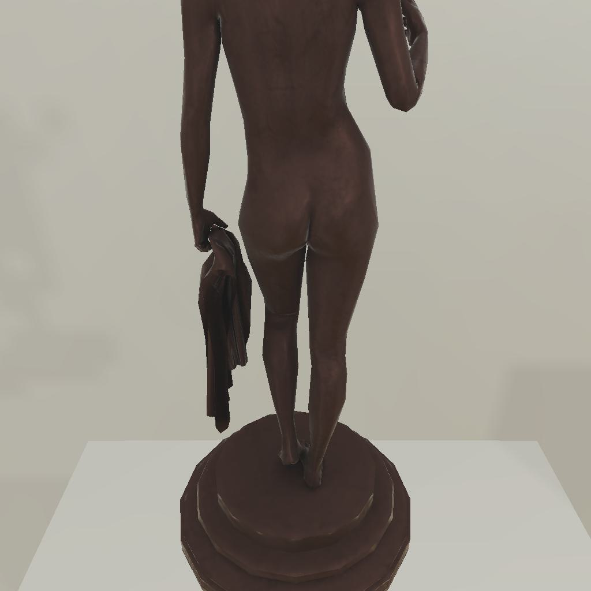

---------------------------------------------------------task: 4---------------------------------------------------------
--------------------------------------------------------------------------------------------------------------------------------------------------------------------
--------------------------------------------------------------------------------------------------------------------------------------------------------------------
Step:--------------------------------------------------------------------------8-------------------------------------------------------------------------------
----------------------------------------
VLM Prompt:
Image1:
Image2:
Image3:
**Instruction**
1. Analyze the provided images to identify all visible household objects and compare the difference between images (e.h. whether the object is opened or not and taken on hand or not), focusing on those relevant to the task description "examine the statue with the floorlamp."
2. Use the analysis of images and the task hint "The agent must find an object of the desired type, locate and turn on a light source with the desired object in-hand." to answer the question: what is the most reasonable action in the choices for the task description "examine the statue with the floorlamp"?
3. Decide and write the answer using the template: The answer is: (i): , where i is the real number. If there is no desired object in images, search every place based on **Initial Observation** to find the object. And if no one is exactly correct, choose a similar answer.
**Initial Observation**
You are in the middle of a room. Looking quickly around you, you can see armchair (1), coffeetable (1-2), sidetable (1), garbagecan (1), drawer (1), sofa (1), diningtable (1)
**Answer Choices**
(1): go to armchair 1
(2): go to coffeetable 1
(3): go to garbagecan 1
(4): go to drawer 1
(5): go to sofa 1
(6): go to coffeetable 2
(7): go to diningtable 1
(8): put statue 1 in/on sidetable 1
(9): examine sidetable 1
**Answer**
Let's think step by step by following the instructions.
----------------------------------------
----------------------------------------
Original Response:
1. Analyzing the provided images, there is no household object visible except the statue the agent is holding in all three images. There is no visible difference between the images in terms of the object being opened or not, as the object in question is a statue and does not have an open or closed state. The statue is consistently held in the agent's hand in all images.
2. Based on the task hint and analysis of images, the agent must find an object of the desired type (a floorlamp) and turn on a light source with the desired object (the statue) in hand. However, there is no floorlamp visible in the images provided.
3. Considering the **Initial Observation** and the fact that there is no floorlamp in the images, the agent should search every place to find the floorlamp. None of the answer choices directly relate to finding or turning on a floorlamp, but examining the sidetable may lead to finding the floorlamp if it is located there or nearby.
The answer is: (9): examine sidetable 1
----------------------------------------
----------------------------------------
>>> Refine Original VLM Response and Get Pure Action: examine sidetable 1
----------------------------------------
-----------------------------------------------------------------
Running time: 9.332804203033447 seconds
Total Money: 1.83243
-----------------------------------------------------------------
-----------------------------------------------------------------
Text Observation:On the sidetable 1, you see nothing.
-----------------------------------------------------------------
UNSUCCEED